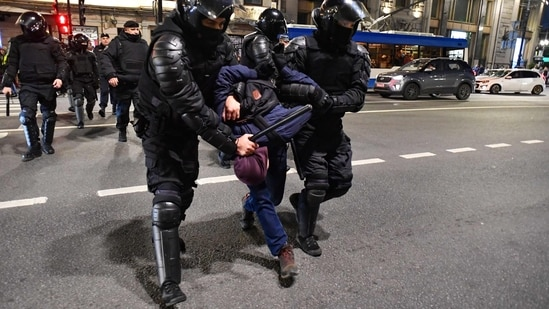

Russia-Ukraine War: Russian authorities have cracked down on criticism of the war in Ukraine, arresting thousands of protesters since the beginning of the conflict in February.
 1, 2, 3, 4 new windowRussia-Ukraine War: Police officers detain demonstrators in Saint Petersburg.(AFP)
The UN voiced alarm on Tuesday at credible reports of nearly 2,400 arrests in less than a week of protests in Russia against the draft ordered by President Vladimir Putin.